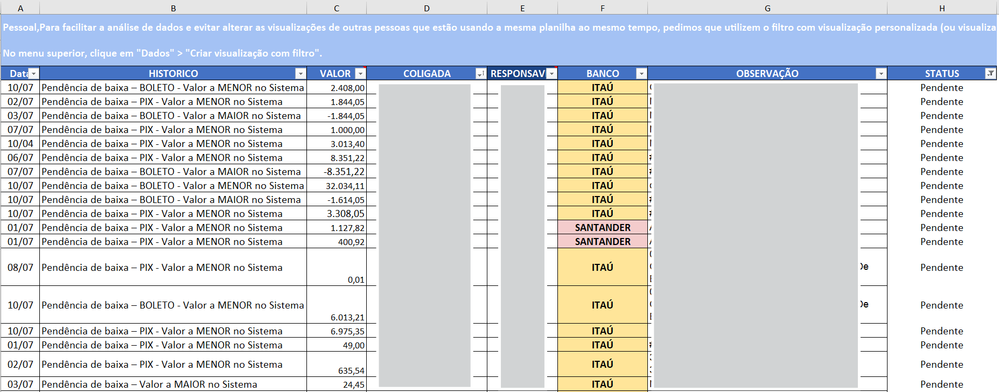
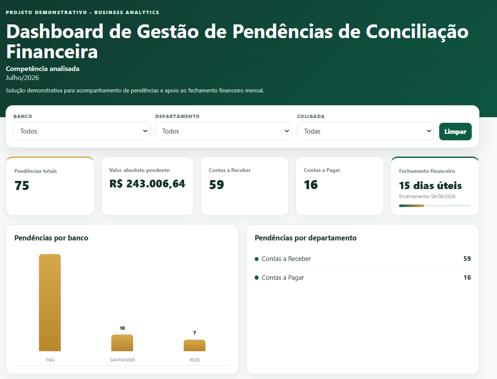
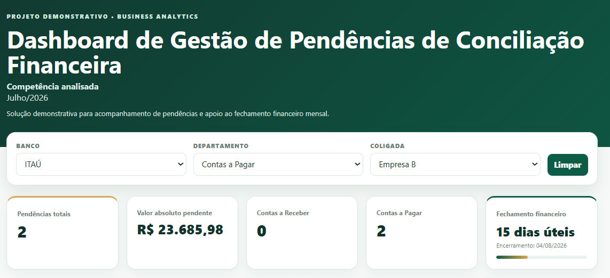
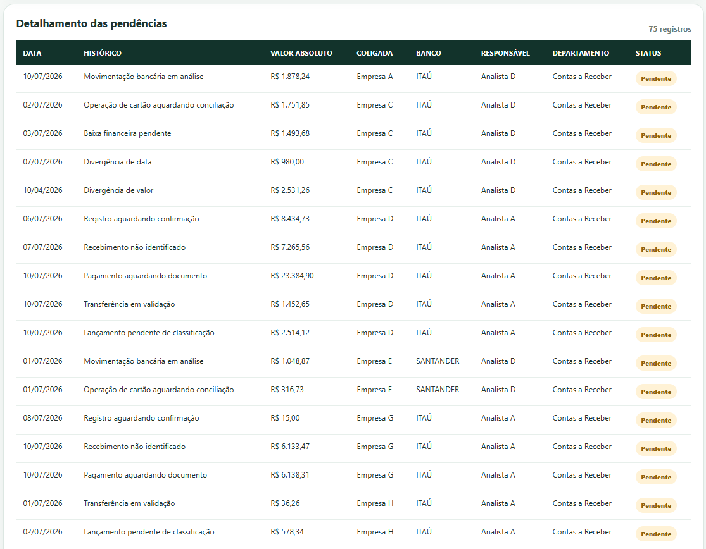

Contexto
O processo de conciliação financeira era realizado por meio de diferentes bases operacionais, distribuídas entre Contas a Receber, Contas a Pagar e operações de cartão. Embora essas informações estivessem organizadas, a ausência de uma visão consolidada dificultava a identificação das pendências, a priorização das tratativas e o acompanhamento do fechamento financeiro mensal. Para resolver esse desafio, foi desenvolvida uma solução web capaz de consolidar automaticamente os dados e disponibilizar indicadores gerenciais em um dashboard interativo.
Essa estrutura dificultava a visualização consolidada das ocorrências, a identificação das empresas com maior volume de pendências e o acompanhamento das tratativas necessárias para o fechamento financeiro mensal.
O projeto surgiu da necessidade de transformar registros operacionais dispersos em uma visão única, clara e acessível para apoiar a rotina da área financeira.
Objetivo
Desenvolver um dashboard capaz de consolidar diferentes bases de conciliação financeira, automatizar o tratamento das informações e disponibilizar indicadores para acompanhamento das pendências e do processo de fechamento mensal.
- Centralizar as bases de Contas a Pagar, Contas a Receber e cartão.
- Padronizar empresas, bancos, responsáveis, departamentos e status.
- Permitir análises por banco, empresa e departamento.
- Apresentar a quantidade e o valor financeiro das pendências.
- Monitorar os dias úteis restantes até o fechamento.
Processo
- Análise das estruturas utilizadas nas bases de conciliação.
- Padronização dos nomes das colunas e das informações em comum.
- Inclusão das classificações de Contas a Pagar e Contas a Receber.
- Tratamento dos valores para criação de uma coluna de valor absoluto.
- Consolidação das bases bancárias e de cartão em uma única fonte.
- Validação dos dados consolidados com os controles financeiros.
- Desenvolvimento do dashboard web com apoio de Inteligência Artificial, a partir das regras de negócio, indicadores e estrutura visual definidos para o projeto.
- Criação de uma versão demonstrativa com empresas, responsáveis, históricos e valores anonimizados.
Entregáveis
Insights
O dashboard permite responder rapidamente perguntas importantes para a gestão das conciliações:
- Quais empresas concentram o maior número de pendências?
- Qual é o valor financeiro total ainda pendente de conciliação?
- Como as pendências estão distribuídas entre Contas a Pagar e Contas a Receber?
- Quais instituições financeiras apresentam maior volume de ocorrências?
- Quais registros devem ser priorizados conforme a proximidade do fechamento?
- Quantos dias úteis restam até o segundo dia útil do mês seguinte?
A principal contribuição foi transformar diferentes bases operacionais em uma visão gerencial única, facilitando a priorização das tratativas e o acompanhamento do fechamento financeiro.
Evidências
1. Base operacional utilizada no processo de conciliação
As informações eram registradas em planilhas operacionais contendo histórico, banco, empresa, responsável e status das pendências. Nesta versão pública todos os dados foram anonimizados.

2. Dashboard consolidado
Visão gerencial das pendências financeiras com indicadores, filtros e gráficos em um único ambiente.

3. Análise dinâmica
Aplicação de filtros por banco, empresa e departamento, atualizando automaticamente todos os indicadores.

4. Detalhamento das pendências
Consulta detalhada dos registros para apoiar a priorização das tratativas e o fechamento financeiro.
